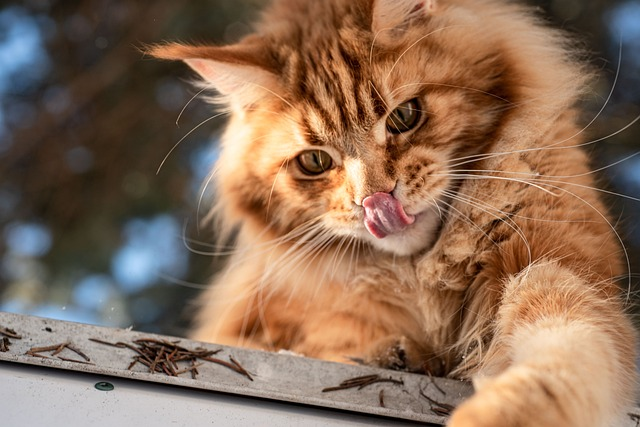

Мейн-кун
НазадКрупнейшая порода кошек, самцы весят от 5,9 до 8,2 кг (кастрированные — до 15 кг), а самки от 3,6 до 5,4 кг (стерилизованные — до 7,5—8,5 кг). Высота в холке у взрослых кошек достигает от 25 до 41 см, а общая длина с хвостом до 120 см (длина хвоста до 36 см). Полный потенциальный размер кошки достигается в возрасте от 3 до 5 лет, в то время как у большинства других кошек — в возрасте 1 года. Однако есть и другие медленно взрослеющие породы, тоже крупного размера (например, норвежская лесная). Все особи породы мейн-кун имеют небольшие кисточки на кончиках ушей. Длина тела мейн-кунов составляет метр и более, самый длинный официально зарегистрированный мейн-кун имел тело длиной 1 метр 23 сантиметра. При рождении котята мейн-кунов несколько крупнее котят обычных кошек. Минимальный вес жизнеспособного новорождённого котёнка мейн-куна — 80 граммов, нормальный вес котят мейн-кун составляет 100—180 граммов[источник не указан 889 дней]. Половой диморфизм у мейн-кунов заметно выражен. Кошки при рождении значительно меньше, чем коты, так же как и во взрослом возрасте. Разница в весе может достигать одной трети, в среднем разница в весе между котами и кошками составляет одну четвёртую. Мейн-кун — длинношёрстная кошка. Шерсть мягкая и шелковистая, текстура может варьироваться в зависимости от цвета шерсти и породного типа. Длина волоса на голове и плечах короче, на животе и по бокам длиннее, у некоторых котов развита украшающая грива на шее. Как и у многих аборигенных пород, шерсть мейн-кунов подвержена сезонным изменениям, летом она легче и короче, зимой чуть длиннее и с более развитым и плотным подшёрстком. Мейн-куны могут быть любого окраса, типичного для обычных домашних кошек, а вот искусственные окрасы, говорящие о возможной примеси других пород, такие как шоколад, лаванда, колор-поинт или типпинг, принимаются не во всех федерациях. Например, колор-поинт в окрасах мейн-кунов принят только в TICA. Самым распространённым рисунком в породе является коричневый и дымчатый табби, в России известный как «дикий» окрас. Как правило глаза яркие, расцветка варьируется от голубых и зелёных до золотых.
